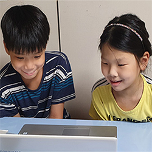
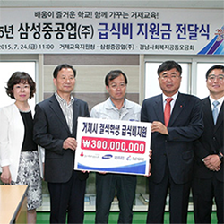
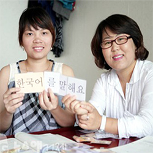
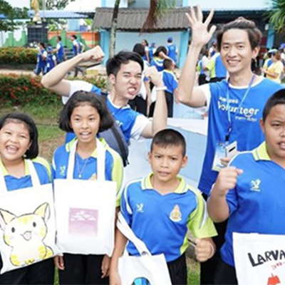

대표사업
-
아동/청소년 밝은 얼굴 찾아주기

국민기초생활자, 선·후천적 저소득 얼굴 기형 환자에게 무료 성형수술과 사회재활 프로그램을 통해 원활한 사회 복귀 및 건강한 사회 구성원이 될 수 있도록 지원하는 밝은 얼굴 찾아주기 사업을 2004년부터 진행하고 있습니다.
-
저소득층 학생 급식/교복 지원 사업

삼성중공업은 지역 내 저소득층 청소년들이 건강하고 올바르게 성장할 수 있도록 돕기 위해 매년 급식/교복 지원 사업을 펼치고 있습니다. 임직원들의 참여를 통해 모인 기부금을 거제교육지원청에 전달했습니다.
-
저소득 다문화 가정 학생 지원

경제력, 자아존중감이 낮고 외부 기관의 후원 없이는 외갓집 방문이 어려운 상황에 처한 다문화 가정 학생을 대상으로, 한국사회에 안정적으로 정착할 수 있도록 지원하였습니다.
-
해외 낙후지역 아동/청소년들을 위한 지원사업

해외 빈곤지역 아동의 보호와 교육을 위한 지원부터 청소년들의 빈곤을 해결하기 위한 직업기술학교를 지원하는 등 아동/청소년들의 성장을 돕고 있습니다.